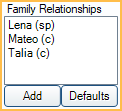
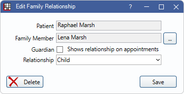

Family Relationships
In Edit Patient Information, near the center, is a list for Family Relationships.
This is not a commonly used option, however a relationship may determine who is considered an Authorized Representatives in the Patient Portal.
Add: Create a new family relationship. See the following Edit Family Relationship section.
Defaults: When clicked, the following occurs:
- Deletes all current relationships.
- Makes the oldest female family member the mother for all family members with a position of Child.
- Makes the oldest male family member the father for all family members with a position of Child.
- The relationships are automatically applied to all family members.
Edit Family Relationship
Click Add to create a new family relationship or double-click an existing entry to edit. Edit Family Relationship opens.
Manually entered relationships are not automatically copied to other family members.
Patient: The name of the currently selected patient.
Family Member: Click [...] to pick a family member. Immediate family members appear in the list. Click Other to choose a patient outside of the current family.
Guardian: Check this box designate the family member as the patient's guardian.
- The family member is given access to the patient's health information in the Patient Portal.
- Add the Guardians row to an Appointment View to show this relationship on appointments.
- Add the Guardians field to Fields Showing in Display Fields, PatientInformation to show the relationship in the the Family Module, Patient Information area (first name, relationship abbreviation).
Relationship: Click the dropdown to select the family member's relationship to the patient.
- Brother (br)
- Caregiver (cg)
- Child (c)
- Father (d)
- Foster Child (fc)
- Friend (f)
- Grandchild (gc)
- Grandfather (gf)
- Grandmother (gm)
- Grandparent (gp)
- Guardian (g)
- Life Partner (lp)
- Mother (m)
- Other (o)
- Parent (p)
- Self (se)
- Sibling (sb)
- Sister (ss)
- Sitter (s)
- Spouse (sp)
- Stepchild (sc)
- Stepfather (sf)
- Stepmother (sm)
Click Save to keep changes.